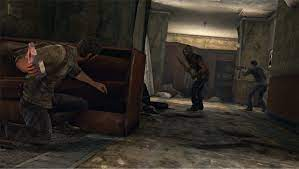
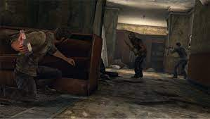
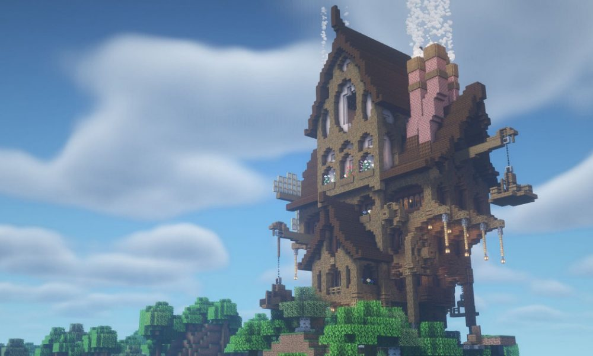
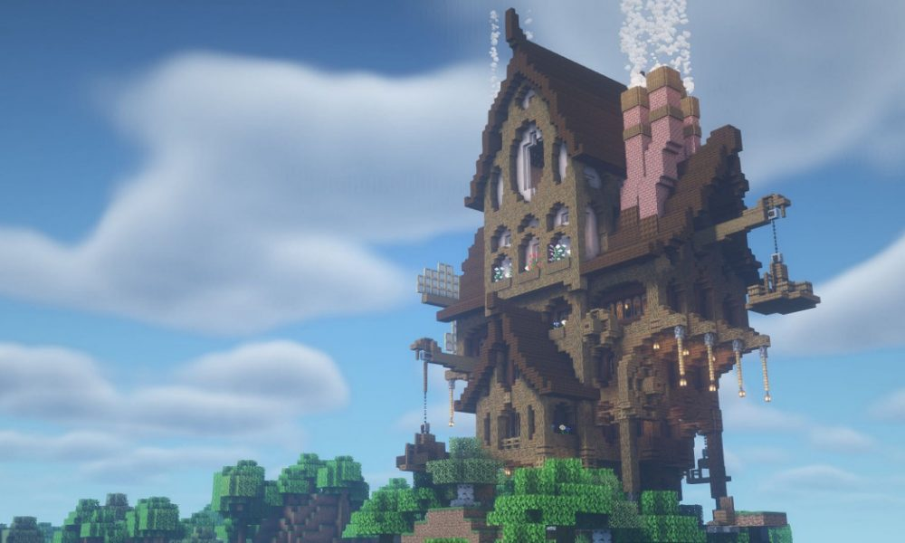

The 80's: Super Mario Bros. 3
Super Mario Bros. 3 came out in 1988, quickly becoming one of Nintendo's most popular titles.
I mean who doesn't like flying around as Racoon Mario!?
(Trivia: The original name for this is Tanooki
Mario in Japan based on the
Japanese racoon-dog.)
Not only did the game feature tons of variety in worlds
and enemies, you could always warp your way past difficult parts using those magical warp whistles!
The 90's: The Legend of Zelda: Link to the Past
First released in North America in 1992 for the Super Nintendo console, Link to the Past was the smash hit follow up to the original NES games. It introduced staples of Zelda gameplay such as the Master Sword and parallel worlds. Which is a huge relief conisdering the Master Sword is the only way to defeat Ganon and save Hyrule!

The 2000's: Left 4 Dead
The 2000's saw the release of much more powerful 64-bit gaming consoles like the PS2 in 2000 and later, the Xbox 360, in 2005. These game platforms provided the computing power to build larger and more complex games. Left 4 Dead used AI to make each play through of the game unique as you fight off hundreds of infected with everything from baseball bats to chainsaws!

The 2010's: The Last of Us
This is no hack-and-slash zombie survival game, the Last of Us blurred the lines between film and video games with it's gripping storyline and deep character development. Players are sucked into an extremely hostile world as they used their wits to survive in a plce awhere one misplaced step, or misplaced trust, could mean the difference between life and death
 

The 2020's: Minecraft
Yes, yes, I know that Minecraft officially came out in 2011. But with more than a decade of updates and 140 million monthly playersthis is a game that showed up and isn't going anywhere anytime soon. You can build a simple log cabin or the Greek Parthenon, in this game the sky is literally the limit (y=320, if you know, you know). Acquired by Microsoft in 2014 for $2.5 billion (that's €2.23 billion or ¥346.6 billion), this game just keeps getting bigger and bigger.
 
